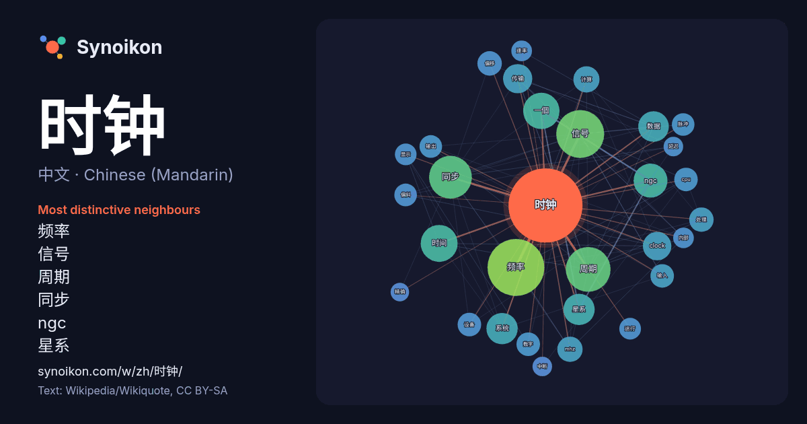

中文 · Chinese (Mandarin) · word of the day list
时钟
“clock” · The words found around it in 690 instances from Chinese (Mandarin) Wikipedia, Wikiquote.

Most distinctive neighbours
- 频率 70×
- 信号 47×
- 周期 44×
- 同步 40×
- ngc 27×
- 星系 22×
- 传输 20×
- clock 20×
- 时间 18×
- 数据 16×
- mhz 16×
- 偏移 15×
- cpu 13×
- 系统 13×
- 计算 13×
- 输入 13×
- 偏斜 13×
- 脉冲 13×
- 数字 12×
- 输出 12×
× = how many times more often than in general Chinese (Mandarin) Wikipedia text.
Most frequent neighbours
- 频率 76
- 信号 54
- 周期 47
- 同步 43
- 时间 32
- 一個 31
- ngc 27
- 星系 23
- 系统 23
- 数据 22
- 传输 20
- clock 19
- 不同 19
- 使用 17
- 计算 16
- mhz 15
- 偏移 14
- 处理 14
- cpu 13
- 数字 13
In context
- 各国家和地区人口列表按照各國人口從多至少排列，数据主要来自各国官方人口统计、人口预计或人口普查，缺乏官方数据的则采用第三方人口时钟预计数。 表中各项列出了现时世界各主权国家、各邦联组成国、未受国际普遍承认的国家、属地、海外领土等政治实体。 国家用粗体字表示（例如：印度、中华人民共和国等），海外领地、 Wikipedia snippets · 各国家和地区人口列表
- 时钟频率（英語：clock rate，又譯：时钟速度）是指同步電路中时钟發生器的基础频率，它以“每秒时钟周期”（clock cycles per second）来度量，量度单位採用SI單位赫兹（Hz）。在计算机领域当中，其一般指的是由处理器中的时钟发生器产生的脉冲信号的频率，该信号用于同步计算机中各 Wikipedia snippets · 时钟频率
- 数码时钟或數字時鐘是一种以数字方式（即以数字或其他符号）显示时间的时钟。人類已知最早的數碼時鐘出現於1883年，是由奧地利工程師Josef Pallweber所發明。 Home page. JosefPallweber.com. [2015-11-07]. （原始内容存档于2015-10-01）. Wikipedia snippets · 数码时钟
- EDT）在使用夏令时之时比协调世界时晚四个小时。 在3月的第二个星期天，美国东部时间凌晨2:00，时钟提前至美国东部时间凌晨3:00，留下一小时的间隙。在11月的第一个星期日（美国东部时间）凌晨 2:00，时钟会移回美国东部时间凌晨1:00，这会导致重复一个小时。同时，巴拿马和加勒比海的南部地区不实行夏令时。 Wikipedia snippets · 北美东部时区
- 单位制单位，表示每一秒周期性事件发生的次数。赫兹是以首个用实验验证电磁波存在的科学家海因里希·赫兹命名，常用于描述正弦波、乐音、无线电通讯以及计算机时钟频率等。 赫兹的定义为每一秒周期性事件发生的次数，而國際度量衡委員會将秒定义为：銫133原子基态的兩個超精細能階間躍遷對應輻射的9,192,631 Wikipedia snippets · 赫兹
- 无线电时钟（英语：Radio clock），又称电波钟，是一种通过接收无线电信号，以实现自动（或手动）校准的时钟。其核心原理是：接收含有标准时间编码的信号，经内部电路解调，以修正其走时。它一般具备普通时钟的某些常见功能，如闹铃、温度湿度显示，广播接收等。 无线电时钟的校准方式繁多。长波与短波授时是最常见的形式。 Wikipedia snippets · 無線電時鐘
- 时钟座是南天球六颗黯淡恒星组成的星座，拉丁语原名“hōrologium”源自古希臘語“ὡρολόγιον”，意指摆钟。1756年，法国天文学家尼可拉·路易·拉卡伊率先划分时钟座。1922年，國際天文聯會重新划分星座范围，此后时钟座便属联会认可的88个现代星座。北緯23度線以南可以观测时钟座全部星空。 Wikipedia snippets · 时钟座
- 时钟同步（Clock synchronization）是计算机科学与工程学中的一个概念，旨在协调多个独立的时钟。现实中的多个时钟，即使时间已调至一致，但在一段时间后依然会因为时钟漂移（英语：clock drift）而显示不同的时间，因为它们计时的速率会略有差异。时钟 Wikipedia snippets · 时钟同步
More Chinese (Mandarin) words
Precomputed on 2026-10-09 with default settings (±5 words, medium corpus). The interactive map can refresh it with live data.